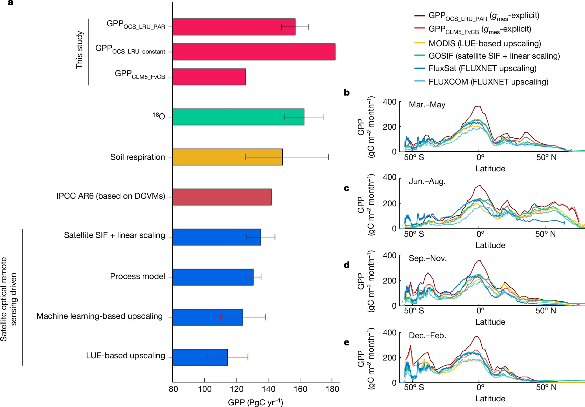

Home Education Research Publication Awards CV
Terrestrial carbon-water coupling is crucial for understanding ecosystem balance between carbon mitigation and water crisis alleviation. Despite decades of research, conventional methods have failed to accurately quantify large-scale carbon and water fluxes and their functional relationships, due to the lack of direct observations at relevant scales. To fill this knowledge gap, I have developed groundbreaking approaches using innovative tracers, i.e., carbonyl sulfide (OCS) and carbon-13 isotope (13C), to infer carbon-water interactions.
Transforming our understanding of terrestrial photosynthesis using OCS
|
My study (Lai et al., 2024, Nature) demonstrates that satellite-derived estimates, long considered as the gold standard for quantifying gross primary production (GPP),
have underestimated this important metric by one-third. Leveraging OCS as a photosynthetic tracer, I inferred a global GPP of 157 (±8.5) Pg C/yr,
substantially higher than the ~120 Pg C/yr value accepted for decades but consistent with independent estimates from oxygen-18 isotope (O18) and soil respiration.
The innovation here lies in OCS’s unique properties: plant uptake OCS through the same pathway as CO2 during photosynthesis, but unlike CO2, OCS is not released through respiration-like processes,
making it an ideal proxy for isolating photosynthetic carbon uptake. Critical to this new OCS-based approach is my improved representation of mesophyll diffusion—an important barrier of gas diffusion
(for both OCS and CO2) from leaf intercellular space to chloroplasts, which is ignored in current land surface models. My OCS-inferred GPP estimate represents a significant advancement in carbon cycle science
with direct implications for climate projections. Notably, my analysis revealed a more productive tropic than previously thought, altering our understanding of carbon cycles over tropical forests. |
|

a, The global annual mean GPP estimates synthesized from literature. The colours of the bars differentiate the broad categories of approaches. b–e, Zonal variations of GPP from this study and a subset of widely used satellite optical remote sensing-driven products from a. |
Reconciling conflicting trajectories of water use efficiency (WUE) using 13C isotope
WUE, the ratio of GPP to evapotranspiration, reflects the trade-off between plants’ carbon gain and water loss. While an increase in ecosystem WUE due to CO2 enhancement was widely expected,
recent studies reported a saturated global WUE attributed to adverse effects from the rising vapor pressure deficit (VPD). To reconcile this debate, I developed a novel framework
that estimates ecosystem WUE from intrinsic WUE, whose global pattern can be rigorously constrained by 13C observations. This framework implemented a refined model of carbon isotopic discrimination (Δ13,
essential to infer intrinsic WUE) that accounts for mesophyll diffusion process previously ignored in global models. This advanced model accurately reproduces the Δ13 increase deduced from atmospheric
13C measurements (Lai et al., in preparation-A). The findings demonstrate that while CO2-driven benefits in global WUE are diminished by rising VPD, they are not completely negated—providing
crucial evidence to this controversial topic (Lai et al., in preparation-B).